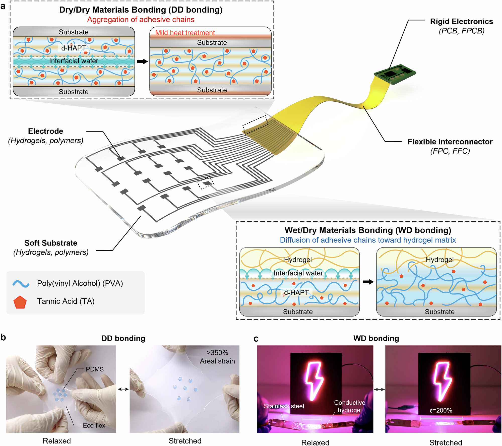

Overview
This study, developed by the BLISS Lab (Jungmok Seo) at Yonsei University with collaborators, introduced d-HAPT, a dried-hydrogel adhesive made of poly(vinyl alcohol) (PVA) and tannic acid (TA) multilayers that joins soft electronic materials through moisture-derived chain entanglement. The dip-coated layer was 958.9 ± 25 nm thick and transmitted about 85% of visible light, and stainless steel joined with it after 1 min at 130 °C reached a lap shear strength of 4.1 ± 1.2 MPa; the abstract reports bonding of up to 3.6 MPa.
Background
Soft electronic devices combine stretchable polymers and hydrogels with rigid components such as integrated circuit chips and printed circuit boards, and these parts must stay joined during body movement. Their different mechanical and chemical properties make this difficult, and the high water content of hydrogels further prevents intimate contact with dry materials. Cyanoacrylate glues form inflexible joints, do not cure on silicone elastomers such as PDMS and Eco-flex, and raise cytotoxicity concerns; epoxies adhere poorly to some plastics and cure slowly, and silver pastes have cytotoxicity and weak bonding. Nature-derived hydrogel adhesives form thick, relatively weak interfaces, and dry hydrogel adhesives developed for tissue had not been examined for joining the building blocks of soft electronic devices.
Design and approach
d-HAPT is deposited layer by layer by dip coating from 2.5% w/v PVA and TA solutions, with TA as the first and last layer; spray and brush coating and a free-standing film are also possible. The galloyl groups of TA interact with organic and inorganic, hydrophilic and hydrophobic surfaces through hydrogen bonding, metal coordination, hydrophobic and π–π interactions, and PVA forms multidentate hydrogen bonds with TA. When the dried layer absorbs water, it swells and becomes plasticized, which increases chain mobility and PVA/TA interdiffusion. In dry/dry (DD) bonding, interfacial water is applied between coated parts, the chains entangle across the interface, and brief heating (standard condition 130 °C for 1 min with a hair iron) evaporates the water and fixes the entangled chains. In wet/dry (WD) bonding, a hydrogel is placed on the coated substrate without heating, and its polymer chains diffuse into and entangle with the d-HAPT layer.

Original paper figure showing d-HAPT bonding across soft substrates, electrodes, interconnects and circuitry, with stretching demonstrations. This is not an AI-generated illustration.
Yejin Jo, Yurim Lee, Jeong Hyun Heo et al. “Universal hydrogel adhesives with robust chain entanglement for bridging soft electronic materials”. Figure 1. DOI: 10.1038/s41528-024-00327-x. CC BY 4.0. Figure content is unchanged.
Source figure and caption ↗ · DOI: 10.1038/s41528-024-00327-x ↗ · CC BY 4.0 ↗
How it was evaluated
The coating was characterized by attenuated total reflectance Fourier transform infrared spectroscopy, profilometry, scanning electron microscopy, laser confocal microscopy, atomic force microscopy (AFM), a cross-cut test (ISO 2409) and UV–visible spectroscopy. Bonding was measured by lap shear tests (bonding area 15 × 20 mm2, 5 mm/min) on identical and heterogeneous metal and polymer pairs (n = 4), on three hydrogels attached to PDMS, polyimide and stainless steel (n = 3), and by T-peel tests. Demonstrations included a stretchable hydrogel LED circuit, a hydrogel touch panel worn on the forearm, a ring-shaped carbon nanotube hydrogel strain sensor and a fingertip temperature and pressure sensor. Biocompatibility was tested with NIH3T3 fibroblasts in a transwell system and by subcutaneous implantation of coated PDMS in mice, and an implantable device with PVA–liquid metal electrodes was used for sciatic nerve stimulation and electrocardiogram recording in rats.
Key results
The dip-coated layer was 958.9 ± 25 nm thick with an areal roughness of 0.014 µm by confocal microscopy and 0.0171 µm by AFM; spray- and brush-coated layers were 3.2 µm and 4.5 µm thick with roughness of 0.022 µm and 0.163 µm. The OH-stretching peak shifted from 3295 cm-1 for pure PVA to 3349 cm-1 for T3P2, indicating stronger hydrogen bonding between the layers. The coating remained on glass and thermoplastic polyurethane after 10 tape-peeling cycles, and coated glass transmitted approximately 85% of light across 400–750 nm, whereas a coating from mixed PVA/TA solution fell below 40%.
DD bonding did not form without either interfacial water or mild heating. Stainless steel bonding strength increased from 3 MPa at 70 °C to 5.5 MPa at 160 °C for 1 min heating, and under the standard condition identical pairs reached 4.1 ± 1.2 MPa for stainless steel, 2.6 ± 0.5 MPa for aluminum and 2.5 ± 0.9 MPa for copper, which the authors compare with up to 80 kPa for other hydrogel-based adhesives on metals. A bonded stainless steel joint supported a 20 kg water tank, and a sample stored underwater still held 500 g after a month. Polymer pairs bonded at 100 °C for 1 min gave 637.6 ± 105 kPa for polyimide, 556.7 ± 98 kPa for acryl and 537.911 ± 60 kPa for polypropylene, while PDMS pairs and heterogeneous pairs with Eco-flex or PDMS failed in the elastomer rather than at the joint. For soft materials, shear strength was about 200 kPa and T-peel strength about 4 N/cm. The Introduction gives 4 MPa for metals and 600 kPa for polymers, and the Abstract up to 3.6 MPa.
In WD bonding, a polyacrylamide–alginate hydrogel on d-HAPT-treated Eco-flex endured strains over 600% without delamination (630% in the Introduction), whereas it delaminated from untreated Eco-flex. PVA–TA, PVA and polyacrylamide–alginate hydrogels bonded more strongly to coated than to bare substrates, and each hydrogel showed similar strength on PDMS, polyimide and stainless steel. PDMS discs bonded to Eco-flex withstood repeated areal strain of up to 350%, and LEDs on 3D-printed hydrogel interconnects stayed lit when the device was stretched to 150% of its initial length. In the wearable touch panel, the flexible flat cable stayed bonded until the hydrogel itself fractured, and the panel was used on the forearm to write 'BLISS' and play a game. The ring-shaped strain sensor changed resistance by more than 20% on a finger, wrist and elbow, had a gauge factor of 1.22 and remained stable over 300 stretching cycles.
NIH3T3 viability by live/dead and CCK-8 assays showed no significant differences between bare and d-HAPT-coated polyimide after 1, 3 and 5 days, and cell morphology also did not differ significantly. Coated PDMS implanted subcutaneously in mice for 7 days caused no significant inflammation, necrosis or noticeable increase in collagen deposition, and serum AST and ALT did not change significantly relative to sham; the Methods describe implantation for 3, 7 and 10 days with n = 4 per group, whereas the figure legend gives n = 3 at 7 days. An implantable device joined with d-HAPT stayed intact under bending and stretching, whereas devices joined with cyanoacrylate or anisotropic conductive film did not. In rats, sciatic nerve stimulation (0.03 to 0.09 mA) produced leg movement that varied with current, and the same device recorded electrocardiograms with distinct P waves, QRS complexes and T waves.
Open questions
The authors note that wet/wet and dry/tissue bonding with d-HAPT were not highly effective compared with previously reported dried hydrogels, and that adhesion strength decreases as the layer absorbs water.
Related research
Instant tough bonding of hydrogels for soft machines and electronics
Wirthl and colleagues bond tough hydrogels to plastics, elastomers and metals within seconds using cyanoacrylate monomers dispersed in alkanes, which diffuse into the hydrogel before polymerizing. This differs from rehydrating d-HAPT layers.
Description drawing on the main textRESEARCH NEWS
Research in the news
Sources used in this summary
This summary is based on the open-access article on the publisher's website (main text, figure legends and Methods), checked against the published PDF; the Supplementary Information and movies were not reviewed.